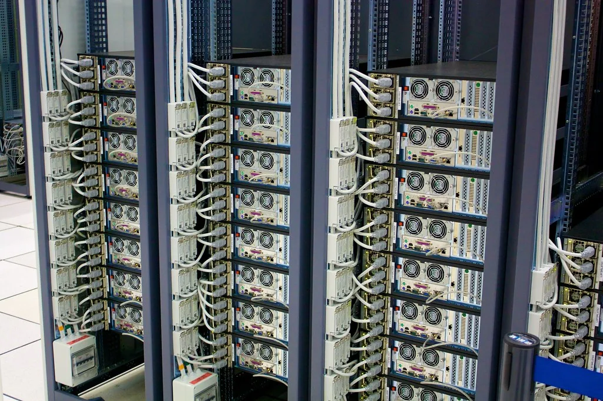
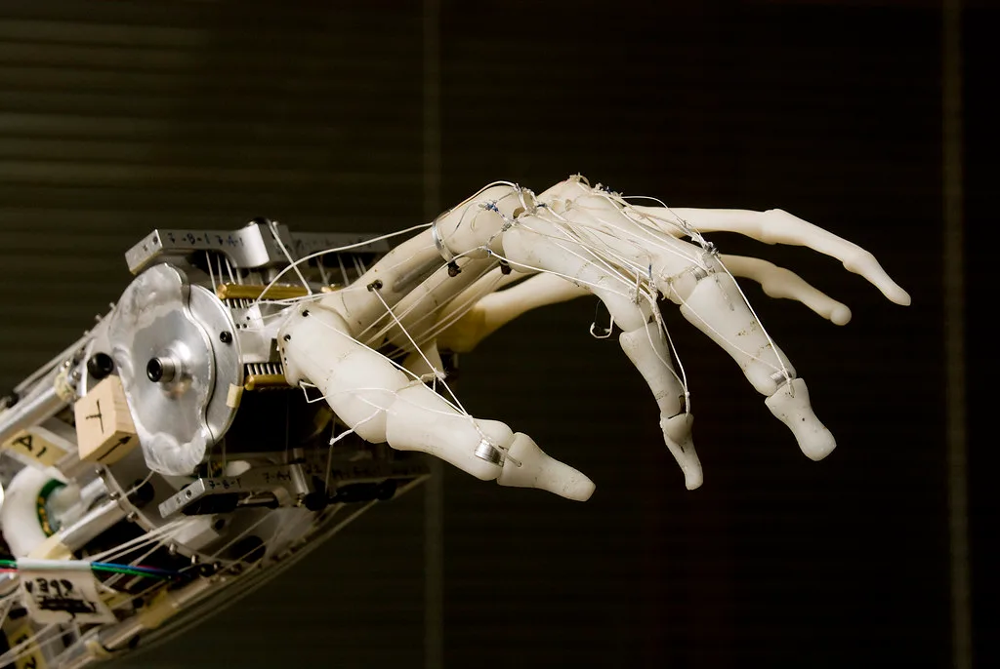

앤트로픽, 기업가치 2조달러 겨냥한 상장 서류 공개…매출 12배 급증
미국 인공지능(AI) 기업 앤트로픽이 기업공개(IPO)를 위한 상장 서류를 통해 실적과 기업가치 목표치를 공개하며 상장 절차에 속도를 내고 있다. 회사가 제시한 목표 기업가치는 2조달러 이상으로, 지난 5월 시장에서 추정됐던 9650억달러 수준과 비교하면 두 배가 넘는 규모다. 생성형 AI 산업에서 손꼽히는 기업의 상장 서류가 공개되면서, 그동안 베일에 가려져 있던 매출과 손익 구조가 구체적인 숫자로 드러났다는 점에서 업계의 관심이 집중되고 있다.
공개된 자료에 따르면 앤트로픽의 2025년 매출은 약 46억달러로, 전년 대비 12배 가까이 급증한 것으로 나타났다. 기업용 AI 모델 수요가 빠르게 늘어난 데 힘입은 결과로 풀이된다. 특히 개발자를 겨냥한 코딩 지원 서비스인 '클로드 코드'의 연환산 매출은 25억달러를 넘어선 것으로 나타났으며, 이 수치는 2026년 들어서도 두 배 넘게 늘어난 것으로 파악됐다. AI 기반 코딩 도구에 대한 기업 수요가 예상보다 빠르게 확산되고 있음을 보여주는 대목이다.

다만 외형 성장과 별개로 손익 측면에서는 대규모 손실도 함께 공개됐다. 회사의 순손실 규모는 420억달러에 달하는 것으로 나타났다. 다만 이 가운데 상당 부분인 약 340억달러는 실제 현금 유출을 수반하는 손실이라기보다, 향후 주식으로 전환될 수 있는 금융상품과 관련한 회계 처리에서 발생한 평가성 비용인 것으로 설명된다. 이런 회계적 특성을 고려하더라도, 대규모 AI 모델 개발과 데이터센터·컴퓨팅 인프라 확충에 막대한 비용이 투입되고 있다는 점은 부인하기 어려운 대목이다.
실제로 회사는 상장 서류를 통해 향후 클라우드·컴퓨팅 인프라에 대규모 투자 계획을 밝힌 것으로 전해진다. AI 모델을 고도화하고 늘어나는 이용자 수요를 감당하기 위해서는 막대한 컴퓨팅 자원 확보가 필수적인 만큼, 상장을 통해 조달한 자금 상당 부분이 이 같은 인프라 투자에 투입될 것으로 예상된다. 이는 앞서 국내에서도 AI 서버용 메모리 수요 급증으로 반도체 공급난이 장기화하고 있다는 소식과 맞물려, 전 세계적으로 AI 인프라 투자 경쟁이 얼마나 치열한지를 보여주는 사례로도 읽힌다.

당초 회사는 6월 비공개로 상장신청서(S-1)를 제출하며 9~10월 중 상장을 목표로 삼았던 것으로 알려졌지만, 최근 일정이 11월 무렵으로 다소 늦춰질 수 있다는 관측도 함께 나오고 있다. 사상 최고 수준의 기업가치를 놓고 시장의 공개 검증이 이뤄지는 과정에서, 일정 조정이 불가피했다는 분석이다.
이번 상장 서류 공개는 생성형 AI 붐을 이끌어온 주요 기업들이 잇따라 기업공개를 준비하는 흐름 속에서 나온 것이어서 더욱 주목받고 있다. AI 산업 전반의 밸류에이션에 대한 눈높이가 이번 상장 과정에서 어떤 방식으로 검증받을지가, 향후 다른 AI 기업들의 상장 전략에도 영향을 미칠 것으로 전망된다.
시장에서는 이번 상장을 계기로 AI 기업의 수익성 검증에 대한 요구가 한층 까다로워질 것이라는 관측도 나온다. 막대한 매출 성장세에도 불구하고 대규모 손실이 이어지는 구조가 상장 이후 공개 시장의 평가에서 어떻게 받아들여질지가, 이번 상장의 성패를 가늠할 핵심 변수가 될 것으로 보인다.